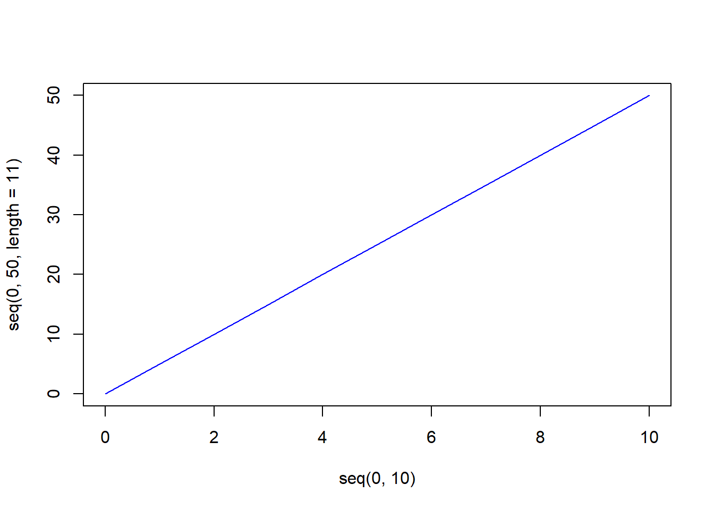

[1] 3.56[1] 3.24[1] -3.56[1] -3.24Функції у програмуванні мають ім'я/назву та () (круглі дужки). Виклик функції зазвичай має вигляд function_name(params).
У цьому розділі описано роботу функцій: round(), ceiling(), floor(), trunc(), signif().
Як ми знаємо з математики, що заокруглення чисел буває “вверх”, “вниз” або відносно деякого значення, зазвичай пов’язаного із цифрою 5 (3.6 заокруглюємо до цілого як \(4\), а \(3.2\) як \(3\), ввжаючи \(3.5\) межею.
Увага! Заокрулення чисел у програмуванні може призводити до помилок у результатах обчислень. Для задач бізнесу, фінансів або технічних процесів мінімальні відхилення можуть призводити до викривлених результатів або збоїв у системах.
round()
Примітка. Тут і надалі функції будуть позначатися як назва() (назва і “круглі” дужки).
Для заокруглення дійних чисел (з дробовою частиною) за правилом <0.5 & >=0.5 (не знаю як називається науково) використовується функція round(x, y), де x - число, y - точність (кількість знаків після коми/крапки). Наприклад:
[1] 3.56[1] 3.24[1] -3.56[1] -3.24Також можна використати round(x) з одним параметром, тоді заокруглення відбудеться до цілої частини, наприклад:
floor()
Для заокруглення до найближчого меншого цілого числа слід скористатися функцією floor():
ceiling()
Для заокруглення до найближчого більшого цілого числа слід скористатися функцією ceiling():
trunc()
Функція trunc() у R використовується для отримання найбільшого цілого числа, яке більше або рівне x. Простими словами це означає, що для чисел менших 0 (x < 0) trunc() працює як celing(), а для чисел більших нуля x > 0, як floor():
signif()
Інколи виникає потреба заокруглити не десяткову частину числа, а десятки, сотні, тисячі і так далі. Розглядемо варіант, коли у нас є велике число \(11 547 741.3\) і нам потрібно коротко його записати як \(11.5 млн\). Для таких задач можна використати функцію signif(x,y), де x - число, яке потрібно заокруглити до певного порядку, y - порядок заокруглення (рахувати від початку). Наприклад:
Послідовності у програмуванні на R це вектори, які містять набір чисел. Найпростіший спосіб створити послідовність у R це використання оператора “двокрапка” :, наприклад:
seq()
Функція seq() використовується для створення послідовностей чисел. Ця функція приймає наступні аргументи:
from - початок послідовностіto - кінець послідовностіby - крок послідовностіlength.out - довжина послідовностіРозглянемо кілька прикладів використання функції seq().
Виведемо числа від \(1\) до \(10\):
Виведемо числа від \(0\) до \(10\) з кроком \(2.5\):
Виведемо та покажемо на графіку 50 чисел від \(0\) до \(10\) (крок у такому випадку обчислюється функцією самостійно):
[1] 0.0000000 0.2040816 0.4081633 0.6122449 0.8163265 1.0204082
[7] 1.2244898 1.4285714 1.6326531 1.8367347 2.0408163 2.2448980
[13] 2.4489796 2.6530612 2.8571429 3.0612245 3.2653061 3.4693878
[19] 3.6734694 3.8775510 4.0816327 4.2857143 4.4897959 4.6938776
[25] 4.8979592 5.1020408 5.3061224 5.5102041 5.7142857 5.9183673
[31] 6.1224490 6.3265306 6.5306122 6.7346939 6.9387755 7.1428571
[37] 7.3469388 7.5510204 7.7551020 7.9591837 8.1632653 8.3673469
[43] 8.5714286 8.7755102 8.9795918 9.1836735 9.3877551 9.5918367
[49] 9.7959184 10.0000000
rep()
Функція rep() також використовується для створення послідовностей чисел, що повторюються. Ця функція приймає наступні аргументи:
x - послідовність, що повторюєтьсяtimes - кількість повтореньeach - кількість повторень кожного елементаСинтаксис виклику:
rep(x = <вектор>,
times = <кількість повторень ветора>,
each = <кількість повторень кожного елемента>)Приклади використання та результаи виконна коду подано нижче.
[1] 1 1 2 3 3 3 3R має вбудовані функції для генерації псевдовипадкових чисел: runif(), sample().
runif()
runif() генерує послідовність випадкових чисел з рівномірним розподілом на відрізку \([min, max]\). Ця функція приймає наступні аргументи:
n - кількість чисел;min - мінімальне значення (за замовчуванням \(0\));max - максимальне значення (за замовчуванням \(1\)).Наприклад, згенеруємо \(5\) випадкових значень на відрізку \([min, max]\):
Виведемо графік з \(1000\) випадкових знань на відрізку \([0, 1]\):
sample()
Функція sample() дозволяє вибрати числа випадковим чином із деякого набору (вектора).
Синтаксис виклику:
sample(x = <вектор>,
size = <кількість випадкових значень>,
replace = <TRUE/FALSE, >,
prob = <вектор з ймовірностями>)Припустимо у нас є деякий вектор x:
Для того аби виьрати одне із значень вектора x випадковим чином, використаємо функцію sample():
Якщо ми хочемо вибрати декілька значень вектора x випадковим чином, то використаємо аргумент size:
Зверніть увагу, що у такому випадку усі значення завжди будуть різними у межах одного вибору.
У випадку, якщо потрібно вибрати значення з повтореннями, то використаємо аргумент replace:
Якщо потрібно вибрати значення з деякими ймовірностями, то використаємо аргумент prob:
Окрім описаного вище набору функцій R містить дуже велику кількість реалізованих функцій з різних сфер науки, бізнесу, техніки тощо. Прочитати про них можна з офіційної документації пакетів, у яких вони реалізовані та знайти за допомогою функції help() або ?name.
Далі розглянемо перелік найпоширеніших функцій, що використовуються для розв’язання навчальних задач під час вивчення основ програмування.
| Функція | Призначення, опис |
|---|---|
log(x) |
Логарифм числа x за основою e
|
log(x,n) |
Логарифм числа x за основою n
|
exp(x) |
e у степені x
|
sqrt(x) |
Корінь квадратний числа x
|
factorial(x) |
Факторіал числа x
|
abs(x) |
Модуль числа x
|
Також у R доступні ряд тригонометричних функцій, які вивчалися у школі і не тільки, серед них cos(x), sin(x), tan(x), а також acos(x), asin(x), atan(x), acosh(x), asinh(x), atanh(x).
Детальніше про кожну з них можна почитати у документації за допомогою кодманди help(function).
Згенеруйте \(1000\) випадкових чисел у діапазоні \([0,1]\). Заокругліть їх до десятих (“2 знаки після коми/крапки”). Побудуйте графік за допомогою функції plot().
Розв’язання